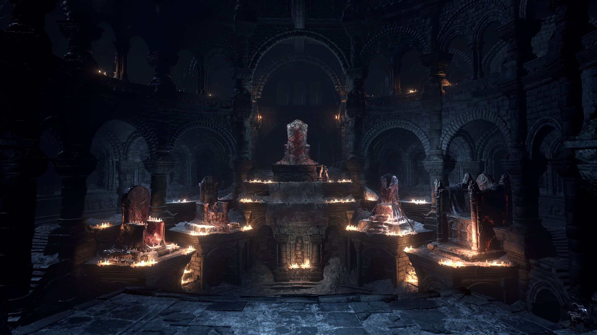

"Estar vivo... Caminhar sobre essa Terra... Essa é a verdadeira maldição"
Dark Souls 1 (2011)
O jogador assume o papel de um Morto-vivo Amaldiçoado, marcado pelo Selo Sombrio, que o condena a renascer após a morte. Ele desperta na prisão de Undead Asylum e descobre um mundo em decadência, repleto de ruínas antigas e segredos esquecidos.
Chefes e NPCsDark Souls 2 (2014)
O jogador se torna o Portador da Maldição, chegando ao reino de Drangleic, um território arruinado e esquecido. Cada desafio reforça a sensação de fragilidade e a necessidade de perseverança diante do destino.
Chefes e NPCsDark Souls 3 (2016)
O jogador é um Inaceso, trazido de volta à vida para reacender a chama. Em Lothric, enfrenta antigos Senhores das Cinzas e decide o destino do mundo — reacender o fogo ou deixá-lo apagar.
Chefes e NPCs